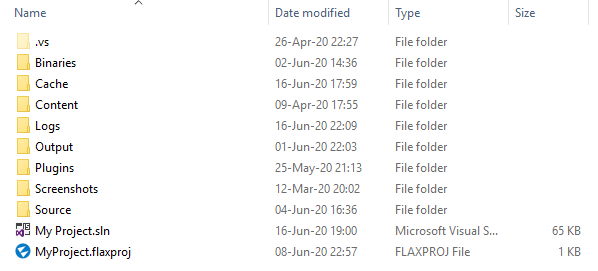

Flax projects structure

All Flax projects have a unified structure. This strict organization helps with development and provides better standardization across all Flax games.
The Flax Editor can load projects located in any location on your drive. It's only required to place a valid .flaxproj file that describes the project (name, metadata). Flax Editor will generate all project folders if missing (Cache, Content, Logs and Source directories) as well as C# projects and solution file.
Example .flaxproj
{
"Name": "My Project",
"Version": "1.0",
"Company": "",
"Copyright": "",
"GameTarget": "MyProjectTarget",
"EditorTarget": "MyProjectEditorTarget",
"References": [
{
"Name": "$(EnginePath)/Flax.flaxproj"
},
{
"Name": "$(ProjectPath)/Plugins/MyPlugin/MyPlugin.flaxproj"
}
],
"DefaultScene": "297f662e43c41143e406ae9ab85097f2"
}
To learn more about project file properties see the reference.
Folders structure
- <root>
- Binaries - compiled game scripts binaries
- Cache - editor local cache folder, buid cache, used for thumbnails, game cooker cache and other temporary files
- Content - contains all the game assets (models, textures, settings, etc.)
- SceneData - dedicated directory for the private scene assets
- Shaders - auto-improted shaders assets (from source)
- GameSettings.json - fixed location for the game settings asset
- Logs - contains editor log files (and crash dumps)
- Screenshots - contains screenshot files (
.pngformat) you took in editor (useF12key) - Source - contains all game script files (C++ and C# scripts) organized into modules
- Shaders - shader source files
- <GameModule> - subfolder with game module code
- <GameModule>.Build.cs - game module build script
- GameTarget.Build.cs - game target build configuration script
- GameEditorTarget.Build.cs - editor target build configuration script
- <project_name>.sln - project scripts solution file, open it with Visual Studio
- <project_name>.flaxproj - project description and metadata file (used by editor and launcher)